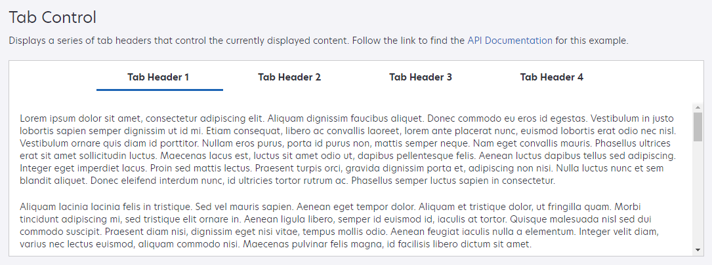

Lexmark Summer Project
This past summer, I was a User Experience Developer Intern at Lexmark Enterprise Software. Two of the larger projects I had the opportunity to work on were redesigning their tab controls and redesigning their home interface.
Below are two images of the redesigned tabs. I updated the design of the existing tabs which is shown in the first image. Then the second image shows the minimal design which is a new option I added to the API for developers on Lexmark's web platform.

Then I also redesigned their home user interface. Previously, the home interface consisted of an apps tab, an activity tab, and then any tabs beyond that were created by the user and would only have widgets. The apps tab couldn't be rearranged and to edit any of the user created tabs, the user needed to go into an edit mode.
The goals of my redesign were to allow for apps and widgets to occupy the same tab and allow the user to edit a tab without needing to go into edit mode. Other changes that occured were getting rid of tab names and creating a Library which would hold all of the user's apps kind of like an app drawer on Android. My implementation of the Library was only a placeholder until an actual design had been decided on.
(I apologize for the speed of the videos. Unfortunately, I hadn't realized how quickly I moved through the demonstrations until after my last day.)
In this video, I demonstrate how the user can create tabs. At the start, the user has 3 tabs already created. At the bottom of every page is a link to add more apps and widgets which the user clicks to get to the Library. From the Library, the user grabs an app and drags it to the "+ New Tab" button to create a new tab. Then they continue to go back and forth between the Library and their newly created tab adding more apps and eventually widgets. After all the desired items are on the tab, the user is able to arrange them to their liking which is demonstrated at the end of the video.
In this next video, I demonstrate how to delete items from a tab. First I show how a user can use the keyboard to delete an item. I use the tab key to move the focus to the "Tasks" app, then I hit the delete key. After confirming the deletion, the app is deleted and an alert is shown confirming the deletion and providing an "Undo" link to bring the deleted item back. Then I show how a user can drag an item to the "Remove" button to delete it. If the user uses this method, they won't be confronted with a confirmation dialog, but the confirmation alert will still display. Eventually, I show how clicking the "Undo" link brings back the item. Then I show how an empty tab is automatically deleted, but undoing the deletion will bring back the deleted tab as well as the item.
The last two videos simply show how a user can move items to other tabs.